UML 简明指南
状态机, 状态, 转移, 事件
状态机是描述系统行为的具体模型. 它由有限数量的状态和转移组成.
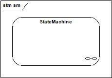
简单状态没有子状态. 它可以拥有数据、入口与出口行为以及延迟事件. 可以为状态 (或状态机) 提供入口和出口行为 (也称为动作), 每当进入或离开一个状态时, 无论以何种方式, 它们都会被执行. 状态还可以拥有内部转移, 内部转移不会触发入口或出口行为. 状态可以把事件标记为延迟. 这意味着当该状态处于活动状态时该事件无法被处理, 但必须保留它. 下次当一个不延迟该事件的状态处于活动状态时, 该事件就会被处理, 就像它刚刚被触发一样.
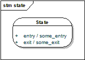
转移是由事件触发的活动状态之间的切换. 动作和守卫条件可以附加到转移上. 动作在转移触发时执行; 守卫是一个先执行的布尔运算, 可以通过返回 false 阻止转移触发.
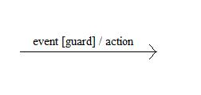
初始状态标记状态机的第一个活动状态. 它本身没有实际存在意义, 从它出发的转移也是如此.
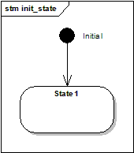
子状态机, 正交区域, 伪状态
复合状态是包含一个区域或分解为两个及以上区域的状态. 复合状态包含自己的一组状态和区域.
子状态机是作为状态插入另一个状态机的状态机. 同一个子状态机可以被多次插入.
正交区域是复合状态或子状态机的组成部分, 每个区域拥有自己的一组互斥的状态和转移.
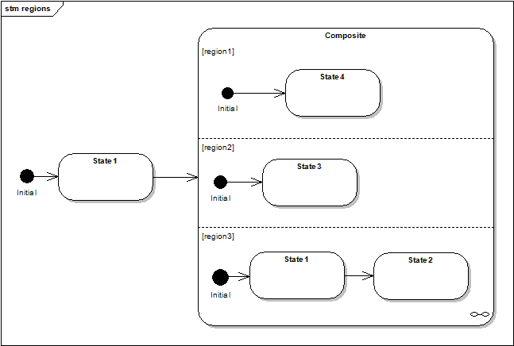
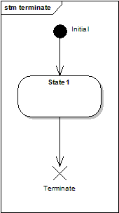
出口点伪状态退出一个复合状态或子状态机, 并强制终止所有被包含区域中的执行.
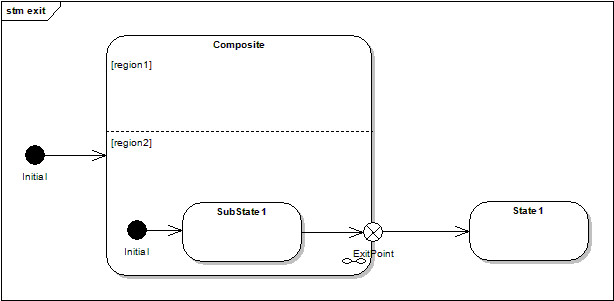
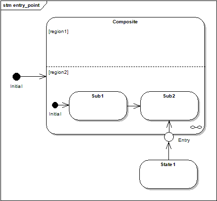
还有两种进入子状态机的方式 (除了显而易见也更常见的以子状态机为终点的转移, 如区域情形所示). 显式入口是指一个内部状态作为转移的目标. 与直接进入不同, 它不做任何暂时性的封装尝试, 且只执行一条转移. 显式出口是从内部状态到子状态机外部状态的转移 (MSM 不支持). 我不建议使用显式入口或出口.
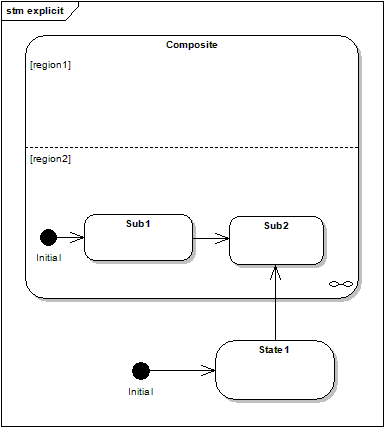
最后一种进入方式是使用分叉. 分叉是对一个或多个区域的显式进入. 其他区域仍以各自的初始状态激活.
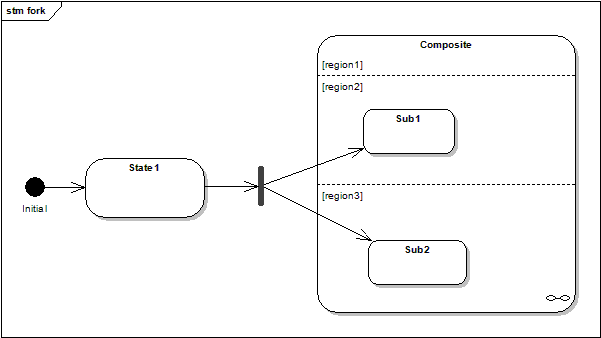
历史
UML 定义了两种历史: 浅历史和深历史. 浅历史是一个代表子状态机最近子状态的伪状态. 一个子状态机最多只能有一个浅历史. 以历史伪状态为目标的转移等价于以最近子状态为目标的转移. 而且非常重要的是, 只能有一条转移从历史出发. 深历史是递归重新激活最近子状态的各子状态的浅历史. 它的表示方法与浅历史相同, 只是多了一个星号 (圆圈内的 H*).
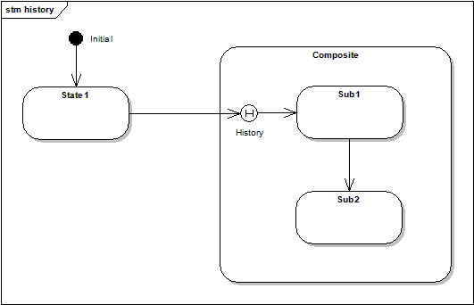
完成转移 / 匿名转移
完成事件 (或转移), 也称为匿名转移, 被定义为没有定义触发事件的转移. 这意味着, 只要守卫允许, 当作为匿名转移源的状态成为活动状态时, 这类转移就会立即触发. 它们在建模算法时很有用, 就像活动图通常所做的那样. 在实时领域, 它们的优势在于更容易估算一个周期性执行的动作会持续多长时间. 例如, 考虑下图.
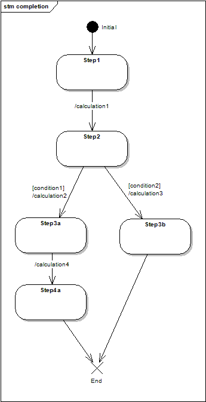
设计者现在随时都知道自己最多需要 4 条转移. 只要能估算出一条转移所需的时间, 他就能估算出需要申请多长的时间片 (实时任务通常按固定间隔执行). 如果他还能估算动作的持续时间, 他甚至可以使用图算法来更好地估算自己的时间需求.
冲突转移
如果对于给定的事件, 多条转移同时被启用, 则称它们处于冲突之中. 冲突有两种:
-
对于给定的源状态, 定义了多条由同一事件触发的转移. 通常, 每条转移中的守卫条件决定哪一条被触发.
-
源状态是一个子状态机或简单状态, 冲突发生在该状态内部的一条转移与另一条由同一事件触发、以其他状态为目标的转移之间.
第一种情况很简单: 只需在转移表中定义两行或多行, 使用相同的源和触发事件, 但守卫条件不同. 不过要注意, UML 标准要求这些条件不得重叠. 如果重叠了, 标准除了说这是错误之外什么也不说, 因此实现者可以按自己认为合适的方式实现. 在 MSM 中, 转移表中最后出现的转移会被优先选择; 如果它返回 false (表示禁用), 库会尝试前一条, 以此类推.
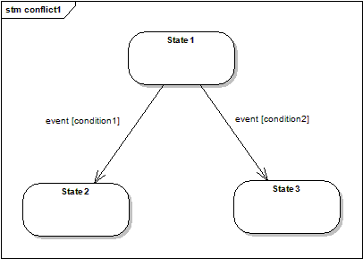
在第二种情况下, UML 规定最内层的转移优先被选择, 这是合理的, 否则出口点伪状态就无法实现 (内部转移把我们带到出口点, 从那里包含状态机可以接管).
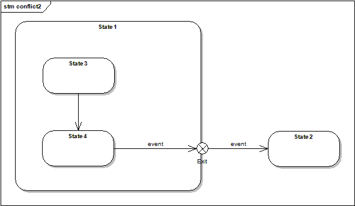
附加概念
-
中断状态: 一种终止状态, 当某个定义的事件被触发时可以从中退出.
-
Kleene (任意) 事件: 带有 kleene 事件的转移会接受任何事件作为触发. 与完成转移不同, 必须有事件被触发, 且原始事件在 kleene 事件中仍然可访问.
状态机术语表
-
状态机 (state machine): 一个事物的生命周期. 它由状态、区域、转移组成, 并处理传入的事件.
-
状态 (state): 状态机生命周期中的一个阶段. 状态 (与子状态机一样) 可以拥有入口和出口行为.
-
事件 (event): 引发 (或不引发) 状态机反应的事件
-
转移 (transition): 对状态机如何响应一个事件的规约. 它指定源状态、触发该转移的事件、目标状态 (若该转移被触发, 它将成为新的活动状态)、守卫和动作.
-
动作 (action): 在转移触发过程中执行的操作.
-
守卫 (guard): 一个布尔运算, 能够阻止一个本会触发的转移.
-
转移表 (transition table): 状态机的一种表示. 状态机图是对同一模型的图形化但不完整的表示, 而转移表则是完整的表示.
-
初始状态 (initial state): 状态机启动时所处的状态. 有多少个正交区域就有多少个初始状态.
-
子状态机 (submachine): 作为状态插入另一个状态机的状态机, 可以在同一个状态机中出现多次.
-
正交区域 (orthogonal regions): 状态机的 (逻辑) 并行执行流. 状态机的每个区域都有机会处理传入的事件.
-
终止伪状态 (terminate pseudo-state): 当该状态成为活动状态时, 它终止整个状态机的执行. 不过 MSM 并不按 UML 标准的要求销毁状态机, 这让你得以保留状态机的全部数据.
-
入口/出口伪状态 (entry/exit pseudo state): 为子状态机定义, 是子状态机外一条转移与子状态机内一条转移之间的连接. 它是经由预定义点进入或离开子状态机的一种方式.
-
分叉 (fork): 分叉允许显式进入子状态机的多个正交区域.
-
历史 (history): 历史是记住子状态机活动状态的一种方式, 使子状态机下次被激活时能从其最后的活动状态继续.
-
完成事件 (也称为完成/匿名转移): 当一条转移没有触发它的具名事件时, 只要源状态处于活动状态它就会自动触发, 除非守卫禁止.
-
转移冲突 (transition conflict): 如果对于给定的源状态和传入事件, 有多条转移可行, 则存在冲突. UML 规定守卫条件必须解决冲突.
-
内部转移 (internal transitions): 从一个状态到其自身的转移, 且不调用出口和入口动作.